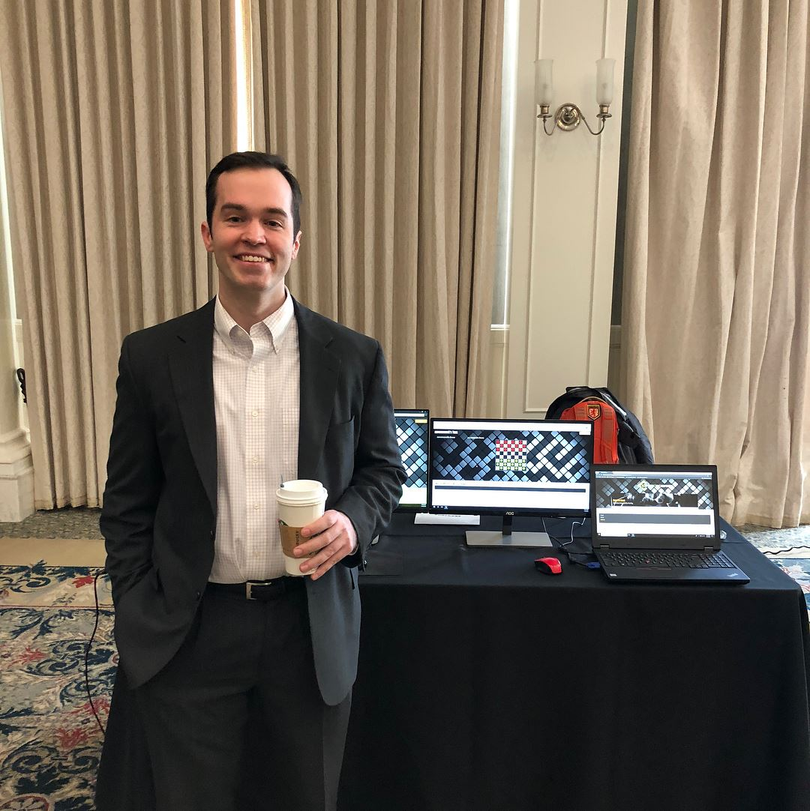

Spencer Ranney
Full-Stack Web Developer
About Me
Developer | Problem Solver | Educator
>
Hi, my name is Spencer Ranney. I am a full-stack web developer who lives in Dallas, Texas. Coding, web development, music, and mathematics are my greatest passions. Throughout my educational and professional experiences, my work ethic and discipline, along with my creative problem solving skills have driven me to great accomplishments. Most recently, I graduated at the top of my cohort at SMU Coding Boot Camp. My passion for web development comes from a love of building abstract ideas into functioning full stack applications. I get a lot of enjoyment out of building something completely my own. I am currently a teaching assistant for the SMU Coding Boot Camp.
Prior to web development, I lived and breathed data analysis, finance and mathematics for 12 years. In 2014, I developed a passion for quantitative financial research, and building algorithms for trading strategies. While all of my work experiences have trained me to be comfortable in diverse work environments with tight deadlines, I wore the most hats in my most recent job. I was hired at Berkeley Research Group to perform litigation research to support of some of the best business litigation experts in Texas. However, I quickly got a name for myself with self-driven programming projects. I built tools that enhanced QA and further pushed financial analysis, including software that scraped financial tables and performed text analytics on financial statements in SEC EDGAR database. After this, I was connected with the healthcare management consulting division of Berkeley Research Group which was the 7th largest firm in its field. For about 8 months, I was the main SQL developer for the Revenue Cycle unit. I gained recognition by more senior individuals in that unit for the work that I accomplished. I only left that department because more quantitatively challenging analysis was coming into the Dallas office and I was pulled back into that work to employ my expertise to litigation analytics. Overall, I have worked in investment analytics, political analytics, litigation analytics and text analytics.
My education has been in actuarial and financial mathematics. The specific science of the analytics fields that I have worked in were brand new to me at the time that I was working in them. Additionally, the languages that I used and the scripts I developed were new endeavors for me. I loved this type of challenge, however, and gained an understanding of how much I loved the challenge of learning new technologies and disciplines, and how good I was at learning them.
I always strive to give my best effort to the people who hire me. I do this out of respect for them, and out of respect for the work that I am blessed to have been given. I give time to contribute to my work place in every circumstance that I know I can help co-workers improve technical skills. Ever since my undergraduate studies, I have gained a reputation as someone to go to for help in studies. I have also tutored in mathematics and most recently web development. My passion for web development and sharing knowledge have most recently led me to come back to SMU as a teaching assistant for the the bootcamp I graduated from.